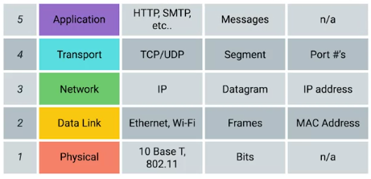
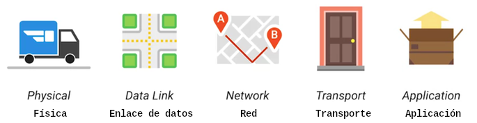
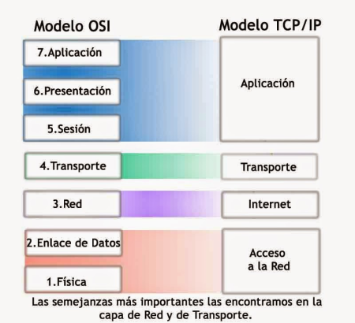
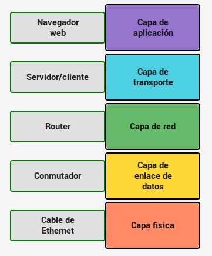
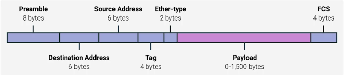

Semana 1M2
Introducción
El conjunto definido de estándares que las computadoras deben seguir para comunicarse correctamente se llama protocolo.
Redes de computadoras es el nombre que hemos dado al alcance completo de cómo las computadoras se comunican entre sí. Una red implica garantizar que las computadoras puedan escucharse entre sí, que se comuniquen mediante protocolos que otras computadoras puedan entender, que repitan mensajes no entregados en su totalidad y un par de cosas más, al igual que en la comunicación humana.
Para este curso, seleccionamos el modelo TCP/IP de cinco capas. También veremos brevemente el otro modelo de red primaria, el modelo OSI, que tiene siete capas. En cada capa, un protocolo transporta a los de las capas anteriores para mover los datos de un lugar a otro.
Piensa en el protocolo que se usa para mover datos de un extremo de un cable de red al otro. Es totalmente diferente del protocolo que usas para mover datos de un lado del planeta al otro.
El modelo de red TCP / IP de cinco capas

• La capa física. Representa los dispositivos físicos que interconectan las computadoras. Esto incluye las especificaciones para los cables de red y los conectores que unen dispositivos, junto con especificaciones que describen cómo se envían las señales a través de estas conexiones.
• La segunda capa en nuestro modelo se conoce como la capa de enlace de datos. Es responsable de definir una manera común de interpretar estas señales para que los dispositivos de red puedan comunicarse. Las normas de Ethernet también definen un protocolo que es responsable de llevar datos a nodos en la misma red o enlace.
• A la tercera capa, la capa de red, a veces también se la llama la capa de Internet. Es esta capa la que permite que diferentes redes se comuniquen entre sí a través de dispositivos conocidos como routers. Un conjunto de redes conectadas entre sí a través de routers es una "interred". La interred más famosa es Internet. La capa de red es responsable de entregar datos a través de un conjunto de redes. El protocolo de uso más común en esta capa se conoce como IP o Protocolo de Internet.
• La cuarta capa, la capa de transporte dispone qué programas de cliente y servidor se supone que reciben esos datos, los correos electrónicos terminan llegando a tu aplicación de correo electrónico y las páginas web, a tu navegador web. Al protocolo más usado en la cuarta capa se lo conoce como TCP o Protocolo de control de transmisión. Aunque a menudo se los mencione juntos, como "TCP/IP", para comprender y solucionar cabalmente problemas de red, es importante saber que son protocolos completamente diferentes y que sirven a diferentes propósitos. Otros protocolos de transferencia también usan IP para moverse, incluido un protocolo conocido como UDP o Protocolo de datagramas de usuario. La gran diferencia entre los dos es que TCP proporciona mecanismos para garantizar que los datos se entreguen de manera confiable mientras que UDP, no.
• La quinta capa se conoce como la capa de aplicación. Los protocolos que se usan para permitirte navegar por la web o enviar y recibir correos electrónicos son algunos de los más comunes.

• La capa física es el camión de reparto y las carreteras.
• La capa de enlace de datos es cómo los camiones de entrega van de una intersección a la siguiente, una y otra vez.
• La capa de red identifica qué carreteras necesitan tomar para ir desde la dirección A a la dirección B.
• La capa de transporte asegura que el conductor de la entrega sepa cómo llamar a tu puerta para avisarte que tu paquete llegó.
• Y la capa de aplicación es el contenido del paquete en sí.
Además del modelo de cinco capas con el que estamos trabajando, es importante tener en cuenta que existen otros modelos. El modelo TCP / IP tradicional solo tiene cuatro capas, ya que no distingue entre la capa física y la capa de enlace de datos, pero por lo demás es muy similar al que estaremos trabajando. El otro modelo más conocido es el modelo OSI. La diferencia principal entre nuestro modelo de cinco capas y el modelo OSI de siete capas es que el modelo OSI abstrae la capa de aplicación en tres capas en total.

https://es.wikipedia.org/wiki/Modelo_OSI
Los fundamentos de los dispositivos de red
Cables
Los cables conectan los diferentes dispositivos entre sí, lo que permite que los datos se transmitan a través de ellos. La mayoría de los cables de red que se usan hoy en día se pueden dividir en dos categorías: de cobre y de fibra.
Los cables de cobre son los cables de red más comunes. Están formados por múltiples pares de alambres de cobre dentro de un aislante plástico.
El dispositivo de envío comunica datos binarios a través de estos cables de cobre cambiando el voltaje entre dos rangos. El sistema en el extremo receptor puede interpretar estos cambios de voltaje como unos y ceros binarios que luego pueden traducirse a diferentes formas de datos.
Las formas más comunes de cables de par trenzado de cobre utilizados en redes son los cables Cat5, Cat5e, y Cat6. Estas categorías tienen diferentes características físicas, como el número de torsiones en el par de alambres de cobre, que da como resultado diferentes longitudes y velocidades de transferencia utilizables. Cat5 es más antiguo y fue reemplazado en su mayor parte por cables Cat5e y Cat6. Lo importante es saber que las diferencias en la disposición de los pares trenzados dentro de estos cables pueden alterar radicalmente la rapidez con la que se pueden enviar los datos a través de ellos y la resistencia de estas señales a las interferencias externas.
Diafonía es cuando un pulso eléctrico que viaja por un cable se detecta accidentalmente en otro cable. Así, el extremo receptor no puede comprender los datos, lo que provoca un error de red. Los protocolos de nivel superior tienen métodos para detectar los datos faltantes y solicitan los datos por segunda vez.
Las especificaciones de mayor calidad de un cable Cat5e reducen la probabilidad de retransmisión de datos. Eso significa, en promedio, que puedes esperar mayor transferencia de datos en el mismo tiempo. Los cables Cat6 siguen una especificación aún más estricta para evitar la diafonía, lo que los hace más costosos. Los cables Cat6 pueden transferir datos de manera más rápida y confiable que los Cat5e, pero debido a su disposición interna, su distancia máxima es más corta cuando se los usa a velocidades más altas.
La segunda forma principal de cable de red se conoce como "fibra", una forma corta de decir cables de fibra óptica. Los cables de fibra contienen fibras ópticas individuales, que son tubos diminutos de vidrio, del espesor de un cabello humano. Estos tubos de vidrio pueden transportar rayos de luz. A diferencia del cobre, que usa voltajes eléctricos, los cables de fibra usan pulsos de luz para representar los unos y los ceros de los datos subyacentes. Los cables de fibra, en general, pueden transportar datos más rápido que los cables de cobre, pero son mucho más costosos y frágiles. La fibra también puede transportar datos en distancias mucho mayores que el cobre, sin sufrir pérdida potencial de datos.
Hubs y Switches
Un concentrador (HUB) es un dispositivo de capa física que permite conexiones de muchas computadoras a la vez. Todos los dispositivos conectados a un concentrador terminarán comunicándose con todos los demás dispositivos al mismo tiempo. Depende de cada sistema conectado al concentrador determinar si los datos entrantes son para ellos o si, en caso contrario, deben ignorarlos. Esto causa gran cantidad de ruido en la red y crea lo que se llama un dominio de colisión. Un dominio de colisión es un segmento de red en el que solo un dispositivo puede comunicarse a la vez. Si varios sistemas intentan enviar datos al mismo tiempo, los pulsos eléctricos enviados a través del cable pueden interferir entre sí. Esto hace que estos sistemas deban esperar un período tranquilo antes de intentar enviar sus datos de nuevo.
Un conmutador (SWITCH) es muy similar a un concentrador, dado que le puedes conectar muchos dispositivos para que puedan comunicarse. La diferencia reside en que un conmutador es un dispositivo de enlace de datos o nivel 2. Esto significa que un conmutador puede inspeccionar realmente los contenidos de los datos del protocolo Ethernet que se envían por la red, determinar para qué sistema son esos datos y, solo entonces, enviar esos datos a ese sistema. Esto reduce o incluso elimina por completo el tamaño de los dominios de colisión en una red. Esto dará lugar a menos retransmisiones y a un mayor rendimiento general.
Los concentradores y los conmutadores son los dispositivos primarios para conectar computadoras en una red, usualmente conocido como LAN o Local Area Network.
Enrutadores
Un ruteador es un dispositivo que sabe como reenviar datos entre redes independientes. Un ruteador opera en la tercera capa, la capa de red. Así como un conmutador puede inspeccionar los datos de Ethernet para determinar adónde manda cosas, un ruteador puede inspeccionar los datos IP para determinar donde manda cosas. Los ruteadores almacenan tablas internas que contienen información acerca de cómo rutear el tráfico entre las muchas diferentes redes en todo el mundo.
El tipo de ruteador más común que verás es el de nuestra red casera o de nuestra oficina. Estos dispositivos generalmente no tienen tablas de ruta muy detalladas. El propósito de estos ruteadores es principalmente tomar el tráfico que se origina desde nuestra LAN dentro de la casa u oficina y reenviarlo al ISP o Internet Service Provider. Una vez que el tráfico está en el ISP, un tipo de router más sofisticado toma el control.
Estos ruteadores principales son la parte central del Internet y son responsables directos de cómo enviamos y recibimos datos a través de Internet cada día. Los Ruteadores del Núcleo (core router) del ISP no solo gestionan mucho más tráfico que en casa o que el ruteador de la oficina, también tienen que manejar mayor complejidad al tomar decisiones sobre donde mandar el tráfico. Un ruteador núcleo, usualmente tiene muchas conexiones hacia otros ruteadores. Los ruteadores comparten datos entre sí vía un protocolo conocido como BGP o Border Gateway Protocol Esto les permite aprender sobre los caminos más óptimos para redirigir el tráfico. Los ruteadores son guías globales para ubicar el tráfico en el lugar correcto.
Servidores y Clientes
Todos los dispositivos de red que conociste existen para que las computadoras puedan comunicarse entre sí, ya sea que estén en la misma habitación o a miles de kilómetros de distancia. A estos dispositivos los venimos llamando "nodos". La forma más sencilla de pensar en un servidor es como algo que proporciona datos a algo que los solicita. Lo que recibe los datos se conoce como "cliente". Si bien a menudo decimos que los nodos son servidores o clientes, es porque no solo los nodos pueden ser servidores o clientes. Los programas informáticos individuales que se ejecutan en el mismo nodo también puede ser servidores y clientes entre sí. Casi todos los nodos, en algún momento, son ambas cosas. Un servidor es cualquier cosa que puede proporcionar datos a un cliente, pero también usamos este término para referirnos al propósito principal de varios nodos en nuestra red.
La capa física
Mover bits a través del cable
La capa física consiste en dispositivos y medios de transmisión de bits a través de redes informáticas. Un bit es la menor representación de datos que una computadora puede entender. Es un uno o un cero. Estos unos y ceros enviados a través de redes en el nivel más bajo son los que componen las tramas y los paquetes de datos sobre los que aprenderemos cuando veamos las otras capas.
Un cable de red estándar, de cobre, conectado a dispositivos en ambos extremos, llevará una carga eléctrica constante. Los unos y los ceros se envían a través de esos cables de red a través de un proceso llamado modulación. La modulación es una forma de variar el voltaje de esta carga en movimiento a través del cable. Cuando se usa para redes informáticas, a este tipo de modulación se la conoce más específicamente como codificación de línea. Permite que los dispositivos en cualquier extremo de un enlace comprendan que una carga eléctrica en cierto estado es un cero, y en otro estado, un uno.
Cableado de par trenzado y dúplex
El tipo de cableado más común que se usa para conectar dispositivos informáticos se conoce como par trenzado. Se llama cable de par trenzado porque tiene pares de alambres de cobre trenzados entre sí. Estos pares actúan como un solo conducto para la información y su naturaleza trenzada protege contra la interferencia electromagnética y la diafonía de pares vecinos.
Un cable estándar de categoría 6 tiene ocho alambres dispuestos en cuatro pares trenzados dentro de un recubrimiento simple.
La comunicación dúplex implica que la información puede fluir en ambas direcciones a través del cable. Por otro lado, un proceso llamado comunicación símplex es unidireccional. La forma en que los cables de red garantizan que la comunicación dúplex sea posible es reservando uno o dos pares para comunicarse en una dirección. Luego usan el par o los pares restantes para comunicarse en la otra dirección. Por lo tanto, los dispositivos a ambos lados de un enlace de red puede comunicarse entre sí al mismo tiempo. Esto se conoce como dúplex completo.
Si algo anda mal en la conexión, podrías ver que el enlace de red se degrada y se reporta como semidúplex. Semidúplex significa que, si bien la comunicación es posible en ambas direcciones, solo se puede comunicar un dispositivo a la vez.
Las tecnologías Ethernet sobre par trenzado son los protocolos de comunicación que determinan la cantidad de datos que se pueden enviar a través de un cable de par trenzado, la rapidez con la que se pueden enviar los datos y el tiempo que puede durar un cable de red antes de que la calidad de los datos comience a degradarse. https://es.wikipedia.org/wiki/10BASE-T
Puertos de red y paneles de conexión
Los cables de red de par trenzado terminan en un conector que toma los cables internos individuales y los expone. El conector más común se conoce como RJ45, o Registered Jack 45. Los puertos de red, por lo general, están incorporados directamente en los dispositivos que forman una red informática. Los conmutadores tendrán muchos puertos de red porque su fin es conectar muchos dispositivos. Pero los servidores y los equipos de escritorio por lo general solo tienen uno o dos.
La mayoría de los puertos de red tienen dos pequeños LED. Uno es el LED de enlace, el otro es el LED de actividad. El LED de enlace se encenderá cuando un cable esté conectado correctamente a dos dispositivos que se encuentren encendidos. El LED de actividad parpadeará cuando los datos se transmitan activamente a través del cable. En los conmutadores (switch), a veces se usa el mismo LED para el estado de enlace y el de actividad. Incluso podría indicar otras cosas, como la velocidad del enlace.
Un panel de conexión es un dispositivo que contiene muchos puertos de red. Pero no hace otra cosa. Es solo un contenedor para los puntos terminales de muchos tramos de cable. Por lo general, luego se instalan cables adicionales desde el panel de conexión a los conmutadores o a los routers para proporcionar acceso a la red a las computadoras ubicadas en el otro extremo de esos enlaces.
La capa de enlace de datos
Direcciones Ethernet y MAC
El protocolo que más se usa para enviar datos a través de enlaces individuales se conoce como Ethernet. Ethernet y la capa de enlace de datos proporcionan un medio para que el software en los niveles más altos de la pila envíe y reciba datos. Básicamente, uno de los propósitos principales de esta capa es abstraer la necesidad de que otras capas se hagan cargo de la capa física y del hardware en uso. Al transferir esta responsabilidad a la capa de enlace de datos, las capas de Internet, transporte y aplicación pueden funcionar de la misma manera sin importar cómo se conecte el dispositivo en el que se ejecutan.
Ethernet es una tecnología bastante antigua. Nació en 1980 y su primera estandarización bien acabada vio la luz en 1983. Entonces, las redes de computadoras eran totalmente diferentes a las de hoy. Una de las diferencias notables en la topología LAN era que el conmutador o concentrador conmutable no se había inventado aún. Esto implicaba que, con frecuencia, muchos o todos los dispositivos en una red compartieran un único dominio de colisión. Un dominio de colisión es un segmento de red en el que solo un dispositivoa la vez puede comunicarse. Esto se debe a que todos los datos en un dominio de colisión se envían a todos los nodos conectados a él. Si dos computadoras enviaran datos a través del cable al mismo tiempo, esto daría lugar a colisiones literales de la corriente eléctrica que representa nuestros unos y ceros, y su resultado final sería algo ininteligible. Ethernet, como protocolo, resolvió este problema mediante el uso de una técnica conocida como acceso múltiple con detección de portadora y detección de colisión (carrier sense multiple access with collision detection). CSMA/CD se usa para determinar cuándo los canales de comunicación están despejados y el dispositivo está libre para transmitir datos. La forma en que CSMA/CD funciona es bastante simple: si no hay datos en transmisión actual en el segmento de red, un nodo se sentirá libre de enviar datos. Si resulta que dos o más computadoras intentar enviar datos al mismo tiempo, las computadoras detectan esta colisión y dejan de hacerlo. Luego, cada dispositivo involucrado en la colisión espera durante un intervalo aleatorio de tiempo antes de intentar enviar datos de nuevo. Este intervalo aleatorio ayuda a prevenir que todas las computadoras involucradas en la colisión vuelvan a colisionar la próxima vez que intenten transmitir algo.
Cuando un segmento de red es un dominio de colisión, todos los dispositivos ubicados en ese segmento reciben todas las comunicaciones de todo el segmento, lo que implica que necesitamos una manera de identificar a qué nodo estaba destinada la transmisión. Aquí es donde entra en juego algo conocido como dirección de control de acceso a medios, o dirección MAC. Una dirección MAC es un identificador único global acoplado a una interfaz de red individual. Es un número de 48 bits representado generalmente por seis grupos de dos números hexadecimales. Octeto es otra forma de llamar a cada grupo de números en una dirección MAC. Un octeto, en redes informáticas, es cualquier número que se pueda representar con 8 bits. En este caso, dos dígitos hexadecimales pueden representar los mismos números que 8 bits. El número total de posibles direcciones MAC que podrían existir es 2 a la potencia 48, es decir, 281,474,976,710,656 posibilidades únicas. Una dirección MAC se divide en dos secciones. Los primeros tres octetos de una dirección MAC se conocen como Identificador único de organización (OUI). Son asignados a fabricantes de hardware individuales por el IEEE, o Instituto de Ingenieros Eléctricos y Electrónicos. Los últimos tres octetos de la dirección MAC pueden asignarse de cualquier forma que el fabricante quiera con la condición de que solo asigne cada dirección posible una sola vez para que todas las direcciones MAC sigan siendo globalmente exclusivas. Ethernet utiliza direcciones MAC para garantizar que los datos que envía tengan una dirección para la máquina que envió la transmisión y otra dirección para la que debía recibir esa transmisión. De esta manera, incluso en un segmento de red que actúa como un dominio de colisión simple, cada nodo en esa red sabe cuándo el tráfico está destinado para sí.
Unicast, Multicast y Broadcast
Hasta aquí, hablamos de las formas que existen para que un dispositivo transmita datos a otro dispositivo. Esto es lo que se conoce como unidifusión (unicast). Una transmisión de unidifusión siempre tiene como objetivo solo una dirección receptora. A nivel de Ethernet, esto se hace mirando a un bit especial en la dirección MAC de destino. Si el bit menos significativo en el primer octeto de una dirección de destino tiene un valor igual a cero, eso significa que la trama de Ethernet está dirigida solo a la dirección de destino. Esto implica que se la enviará a todos los dispositivos en el dominio de colisión, pero solo será recibida y procesada por el destino previsto.
Si el bit menos significativo en el primer octeto de una dirección de destino tiene un valor igual a uno, eso quiere decir que estás tratando con una trama de multidifusión (multicast). Una trama de multidifusión está configurada de manera similar para todos los dispositivos en la señal de la red local. La diferencia es que será aceptada o descartada por cada dispositivo dependiendo de ciertos criterios, al margen de su propia dirección MAC de hardware. Las interfaces de red se pueden configurar para que acepten listas de direcciones de multidifusión configuradas para este tipo de comunicación.
El tercer tipo de transmisión de Ethernet se conoce como difusión (broadcast). Se envía una difusión por Ethernet. a cada uno de los dispositivos en una LAN. Esto se logra mediante el uso de un destino especial conocido como dirección de difusión. La dirección de difusión de Ethernet está formada solo por efes (F). Las difusiones de Ethernet se usan de modo que los dispositivos puedan tener más información unos de otros.
Disección de un marco Ethernet

Un paquete de datos (data packet) es un término amplio que describe cualquier conjunto simple de datos binarios enviados a través deun enlace de red. El término paquete de datos no está vinculado con ninguna capa o tecnología específica. Tan solo representa un concepto. Un conjunto de datos enviados desde el punto A hasta el punto B.
Los paquetes de datos a nivel de Ethernet se conocen como tramas de Ethernet (Ethernet frame). Una trama de Ethernet es una recopilación de información altamente estructurada, presentada en un orden específico. De esta manera, las interfaces de red en la capa física puede convertir un string de bits que se desplaza a través de un enlace en datos significativos, o viceversa. Casi todas las secciones de una trama de Ethernet son obligatorias y la mayoría de ellas tienen un tamaño fijo.
La primera parte de una trama de Ethernet se conoce como "preámbulo". Un preámbulo tiene 8 bytes o 64 bits de largo y se puede dividir en dos secciones. Los primeros siete bytes son una serie de unos y ceros que se alternan. Actúan parcialmente como un búfer entre tramas y también los usan las interfaces de red para sincronizar los relojes internos con los que regulan la velocidad a la que envían los datos. A este último byte del preámbulo se lo conoce como el SFD o delimitador de inicio de trama. Le indica a un dispositivo receptor que el preámbulo terminó y que ahora siguen los contenidos reales de la trama.
Inmediatamente a continuación del delimitador de inicio de trama viene la dirección MAC de destino. Esta es la dirección del hardware del destinatario previsto. A eso le sigue la dirección MAC de origen, es decir, dónde se originó la trama. No olvides que cada dirección MAC tiene 48 bits o 6 bytes de longitud.
La siguiente parte de una trama de Ethernet es el campo EtherType. Tiene 16 bits de largo y solía describir el protocolo de los contenidos de la trama. Vale la pena señalar que en lugar del campo EtherType, también podrías encontrar lo que se conoce como un encabezado VLAN. Esto indica que la trama en sí es lo que se llama una trama VLAN. Si hay un encabezado VLAN presente, el campo EtherType viene después. VLAN significa "LAN virtual". Es una técnica que te permite tener múltiples LAN lógicas funcionando en el mismo equipo físico. Cualquier trama con una etiqueta VLAN se entregará solamente desde una interfaz de conmutador configurada para retransmitir esa etiqueta específica. Así, puedes tener una sola red física que opera como si fueran múltiples LAN. Las VLAN se utilizan generalmente para segregar diferentes formas de tráfico. Podrías ver los teléfonos IP de una empresa operando en una VLAN, mientras todos los equipos de escritorio operan en otra.
Después de esto, encontrarás la carga útil de datos (data payload) de una trama de Ethernet. En términos de red, una carga útil son los datos reales que se transportan, es decir, todo lo que no es un encabezado. La carga útil de datos de una trama de Ethernet tradicional puede medir entre 46 a 1500 bytes. Esto contiene todos los datos de las capas superiores como las capas de IP, de transporte y de aplicación que realmente se están transmitiendo.
Después de esos datos, tenemos lo que se conoce como secuencia de verificación de tramas (frame check sequence). Este es un número de 4 bytes, o 32 bits, que representa un valor de suma de verificación para toda la trama. Este valor de suma de verificación se calcula realizando lo que se conoce como una verificación por redundancia cíclica contra la trama. Una verificación por redundancia cíclica, o CRC, es un concepto importante para la integridad de los datos y se usa en computación en general, no solo transmisiones en red. Una CRC es básicamente una transformación matemática que usa división de polinomios para crear un número que representa a un conjunto de datos más grande. Cada vez que realices una CRC contra un conjunto de datos, deberías terminar con el mismo número de suma de verificación. La razón por la que se incluye en la trama de Ethernet es para que la interfaz de la red receptora pueda inferir si recibió datos sin corrupción. Cuando un dispositivo se prepara para enviar una trama de Internet, recopila toda la información que vimos, como el destino y las direcciones MAC de origen, la carga útil de datos, etcétera. Luego realiza una CRC contra esos datos y adjunta el número de la suma de verificación resultante como secuencia de verificación de tramas al final de la trama. Estos datos se envían a través de un enlace y se reciben en el otro extremo. Aquí, todos los diversos campos de la trama de Ethernet se recopilan y, ahora, el lado receptor realiza una CRC contra esos datos. Si la suma de verificación calculada por el receptor no coincide con la suma de verificación en el campo de secuencia de verificación de la trama, los datos se desechan. Esto se debe a que alguna cantidad de datos se debe haber perdido o dañado durante la transmisión. Entonces, queda a decisión de un protocolo en una capa superior si esos datos se deben retransmitir. De por sí, Ethernet solo informa sobre la integridad de los datos, no los recupera.